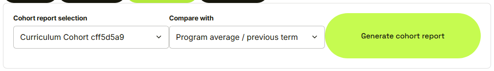
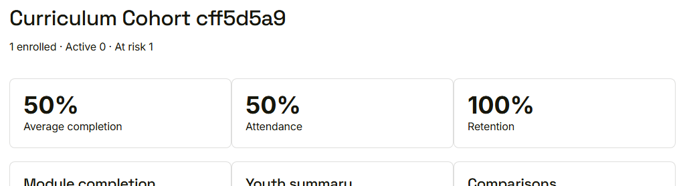
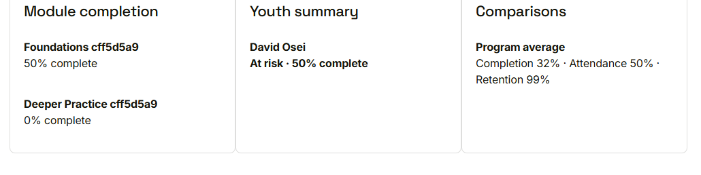

Waypoint · Video 100
The cohort report
How is this cohort doing?
Choose a cohort and a comparison

Compare with the program average, or another cohort
The headline

Enrolled, active, at risk
Modules, youth and comparisons

Who needs attention, at a glance
Scoped to the reader
- A mentor sees only their own youth
- Export buttons export this exact report
Things to remember
- Pick a cohort and what to compare it with
- Enrolment, completion, attendance, retention
- Module progress and a youth summary with status
- Comparisons against the program average or another cohort